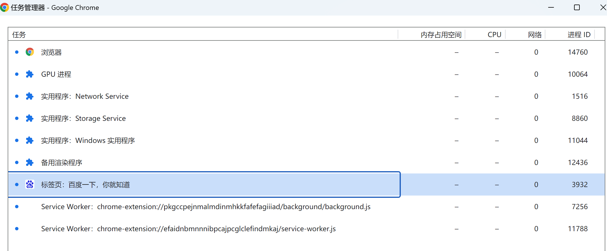
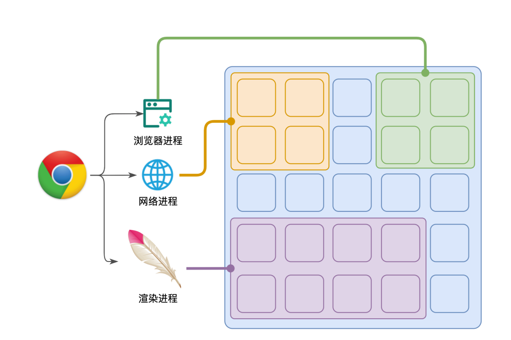
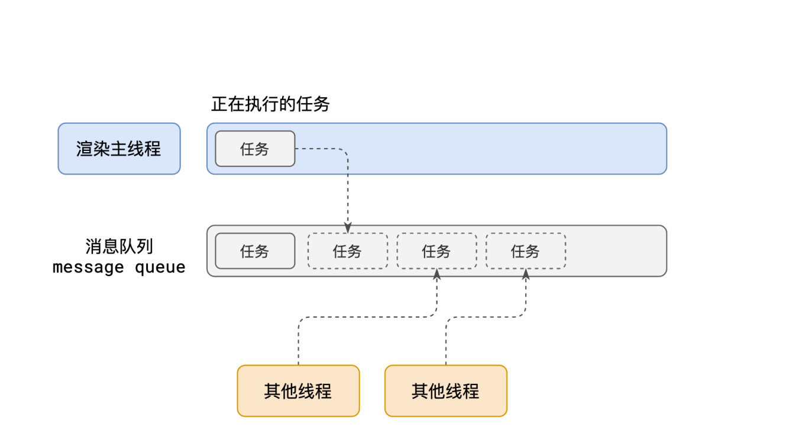
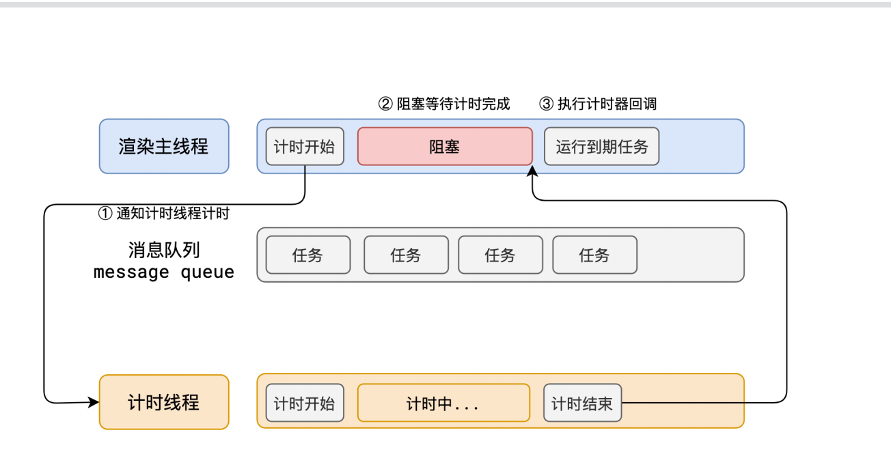
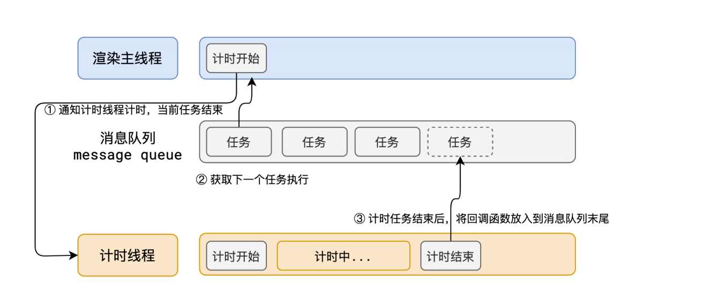
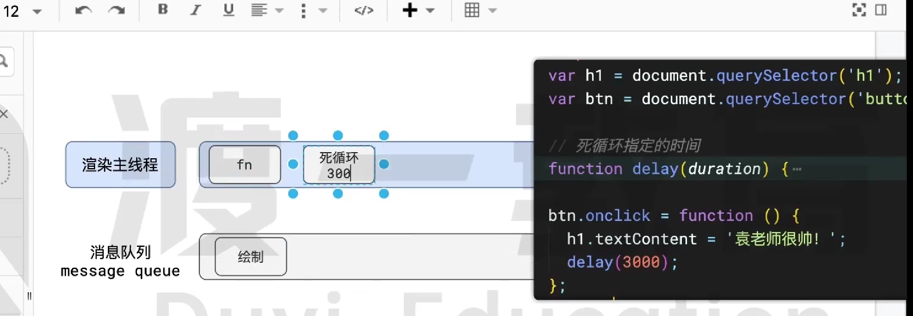
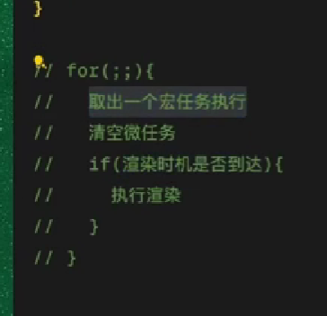

事件循环
进程
程序运行需要有它自己专属的内存空间，可以把这块内存空间简单的理解为进程
每个应用至少有一个进程，进程之间相互独立，即使要通信，也需要双方同意
线程
一个进程至少有一个线程，所以在进程开启后会自动创建线程来运行代码，该线程称之为主线程。
如果程序需要同时执行多块代码，主线程就会启动更多的线程来执行代码，所以一个进程中可以包含多个线程
浏览器的进程与线程
浏览器是一个多进程多线程的应用程序，内部工作极其复杂
为了避免相互影响，为了减少连环崩溃的几率，当启动浏览器后，它会自动启动多个进程
通过浏览器里的任务管理器可以看见浏览器进程，网络进程，GPU 进程等

浏览器进程
主要负责界⾯显示、⽤户交互、⼦进程管理等。浏览器进程内部会启动多个线程处理不同的任务，顶部标签页的渲染，前进，后退，收藏夹，鼠标滚轮等，一切进程都是从浏览器进程开始启动的
⽹络进程
负责加载⽹络资源。⽹络进程内部会启动多个线程来处理不同的⽹络任务。
渲染进程
渲染进程启动后，会开启⼀个渲染主线程，主线程负责执⾏ HTML、CSS、 JS 代码。
渲染进程与渲染主线程
浏览器会为每个标签页开启⼀个新的渲染进程，以保证不同的标签页之间不相互影响。

每个页面一个渲染进程，在渲染进程中有一个渲染主线程，有且只有一个，它一个人承担着诸多工作，学习的事件循环就是渲染主线程是如何工作的，是如何对任务进行排队的。
渲染主线程是浏览器中最繁忙的线程，需要它处理的任务有：
- 解析 HTML
- 解析 CSS
- 计算样式
- 布局
- 处理图层
- 每秒把页面画 60 次
- 执行全局 JS 代码
- 执行事件处理函数
- 执行计时器的回调函数
渲染主线程本身不认识 js 代码，他相当于是要运行一个函数叫做 js 引擎（v8），主线程把代码交给他让他来分析运行
js 是单线程语言，其实说的就是渲染主线程
渲染主线程工作流程

1. 在最开始的时候，渲染主线程会进⼊⼀个⽆限循环
2. 每⼀次循环会检查消息队列中是否有任务存在。如果有，就取出第⼀个任务执⾏，执行完⼀个后进⼊下⼀次循环；如果没有，则进⼊休眠状态。
3. 其他所有线程（包括其他进程的线程）可以随时向消息队列添加任务。新任务会加到消息队列的末尾。在添加新任务时，如果主线程是休眠状态，则会将其唤醒以继续循环拿取任务
整个过程，被称之为事件循环（消息循环）
何为异步
代码在执⾏过程中，会遇到⼀些⽆法⽴即处理的任务，⽐如：
计时完成后需要执行的任务 —— **setTimeout **、 **setInterval **
⽹络通信完成后需要执行的任务 – **XHR **、 **Fetch **
⽤户操作后需要执行的任务 – **addEventListener **
如果让渲染主线程等待这些任务的时机达到，就会导致主线程⻓期处于「阻塞」的状态，从⽽导致浏览器「卡死」

渲染主线程承担着极其重要的⼯作，⽆论如何都不能阻塞！
因此，浏览器选择异步来解决这个问题

如何理解 JS 的异步？
JS 是⼀⻔单线程的语⾔，这是因为它运⾏在浏览器的渲染主线程中，⽽渲染主线程只有⼀个。⽽渲染主线程承担着诸多的⼯作，渲染⻚⾯、执⾏ JS 都在其中运⾏。如果使⽤同步的⽅式，就极有可能导致主线程产⽣阻塞，从⽽导致消息队列中的很多其他任务⽆法得到执⾏。这样⼀来，⼀⽅⾯会导致繁忙的主线程⽩⽩的消耗时间，另⼀⽅⾯导致⻚⾯⽆法及时更新，给⽤户造成卡死现象。所以浏览器采⽤异步的⽅式来避免。具体做法是当某些任务发⽣时，⽐如计时器、⽹络、事件监听，主线程将任务交给其他线程去处理，⾃身⽴即结束任务的执⾏，转⽽执⾏后续代码。当其他线程完成时，将事先传递的回调函数包装成任务，加⼊到消息队列的末尾排队，等待主线程调度执⾏。
在这种异步模式下，浏览器永不阻塞，从⽽最⼤限度的保证了单线程的流畅运⾏。
对于渲染主线程的 js 部分的第一步就是全局执行 js
JS 会阻碍渲染
<h1>Mr.Yuan is awesome!</h1>
<button>change</button>
<script>
var h1 = document.querySelector('h1');
var btn = document.querySelector('button');
// 死循环指定的时间
function delay(duration) {
var start = Date.now();
while (Date.now() - start < duration) {}
}
btn.onclick = function () {
h1.textContent = '袁⽼师很帅！';
delay(3000);
};
</script>

页面会死循环三秒之后，再执行绘制（h1.textContent = ‘袁⽼师很帅！这句话 执行让 js 产生一个绘制任务，可是绘制任务也需要排队)，因为 js 的代码和渲染在一个线程上（渲染主线程），所以可能产生阻塞(js 代码的执行会影响到页面的绘制，页面的绘制是异步的，不是代码改完以后立即渲染)
浏览器的执行过程

任务有优先级吗？
任务没有优先级，在消息队列中先进先出，但消息队列是有优先级的
每个任务都有⼀个任务类型，同⼀个类型的任务必须在⼀个队列，不同类型的任务可以分属于不同的队列。
在⼀次事件循环中，浏览器可以根据实际情况从不同的队列中取出任务执⾏。
浏览器必须准备好⼀个微队列，微队列中的任务优先所有其他任务执⾏
DOM 重新渲染本身是在主线程上执行的，但其触发和执行的时机可能是异步的。
在⽬前 chrome 的实现中，⾄少包含了下⾯的队列：
延时队列：⽤于存放计时器到达后的回调任务，优先级「中」
交互队列：⽤于存放⽤户操作后产⽣的事件处理任务，优先级「⾼」
微队列：⽤户存放需要最快执⾏的任务，优先级「最⾼」
setTimeout的回调，宏任务（macro task）setInterval的回调，宏任务（macro task）- Promise 的
then函数回调，微任务（micro task） requestAnimationFrame的回调，宏任务（macro task）- 事件处理函数，宏任务(macro task)
阐述⼀下 JS 的事件循环
事件循环⼜叫做消息循环，是浏览器渲染主线程的⼯作⽅式。在 Chrome 的源码中，它开启⼀个不会结束的 for 循环，每次循环从消息队列中取出第⼀个任务执⾏，⽽其他线程只需要在合适的时候将任务加⼊到队列末尾即可。过去把消息队列简单分为宏队列和微队列，这种说法⽬前已⽆法满⾜复杂的浏览器环境，取⽽代之的是⼀种更加灵活多变的处理⽅式。
根据 W3C 官⽅的解释，每个任务有不同的类型，同类型的任务必须在同⼀个队列，不同的任务可以属于不同的队列。不同任务队列有不同的优先级，在⼀次事件循环中，由浏览器⾃⾏决定取哪⼀个队列的任务。但浏览器必须有⼀个微队列，微队列的任务⼀定具有最⾼的优先级，必须优先调度执⾏。
JS 中的计时器能做到精确计时吗？为什么？
受事件循环的影响，计时器的回调函数只能在主线程空闲时运⾏，因此带来了偏差